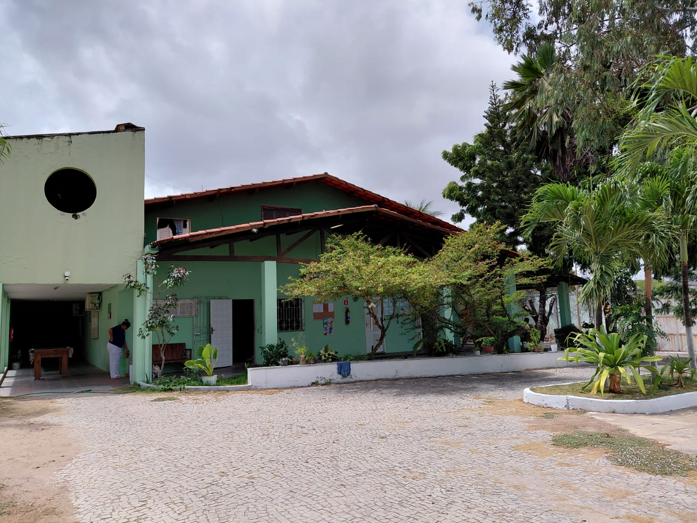
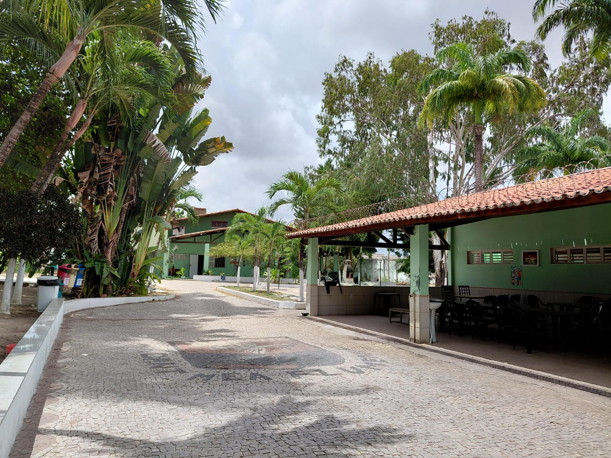
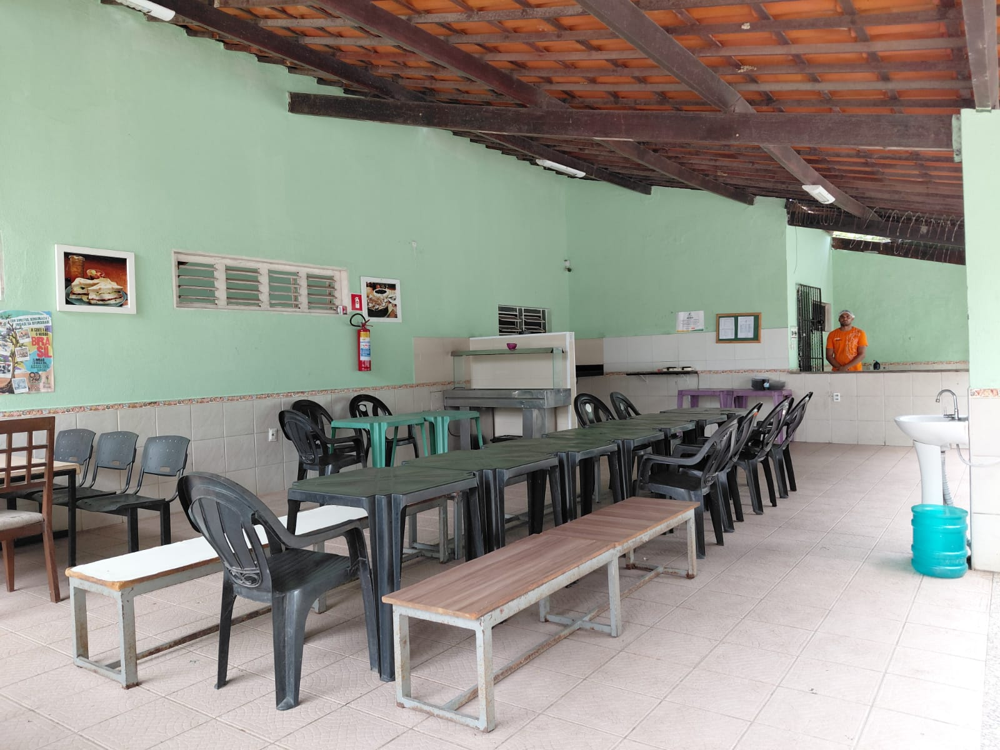
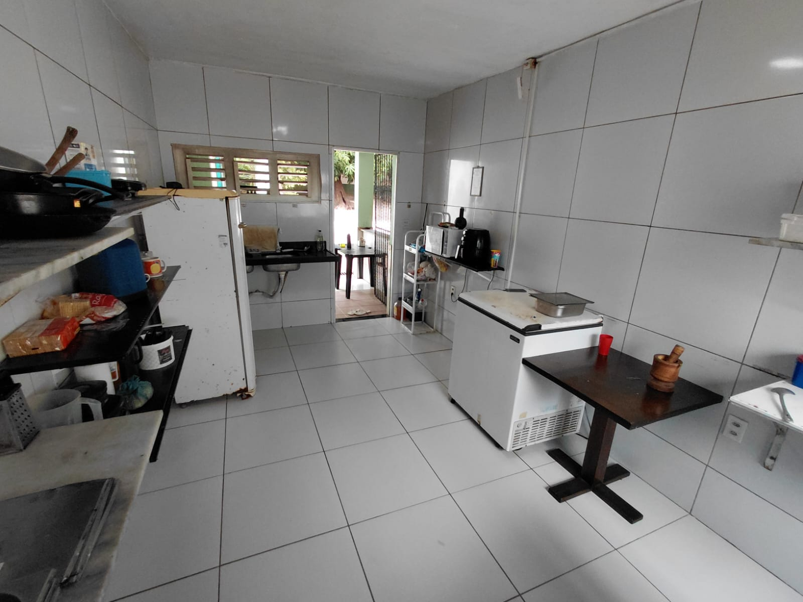
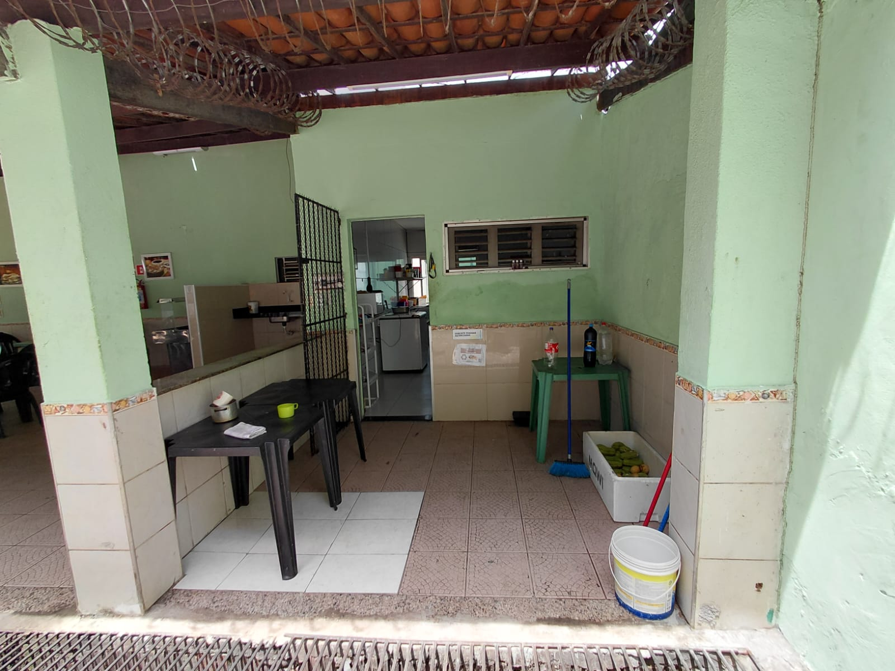
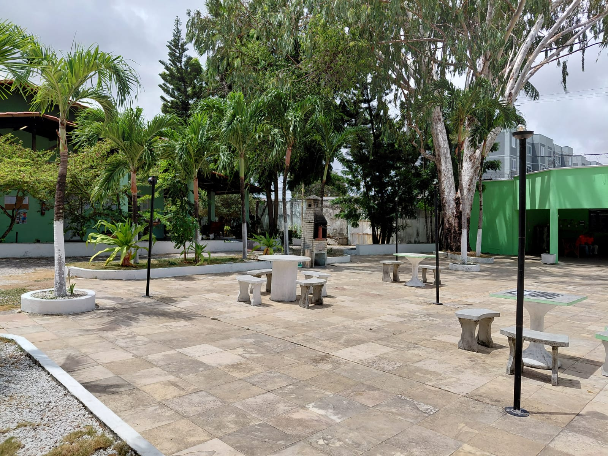
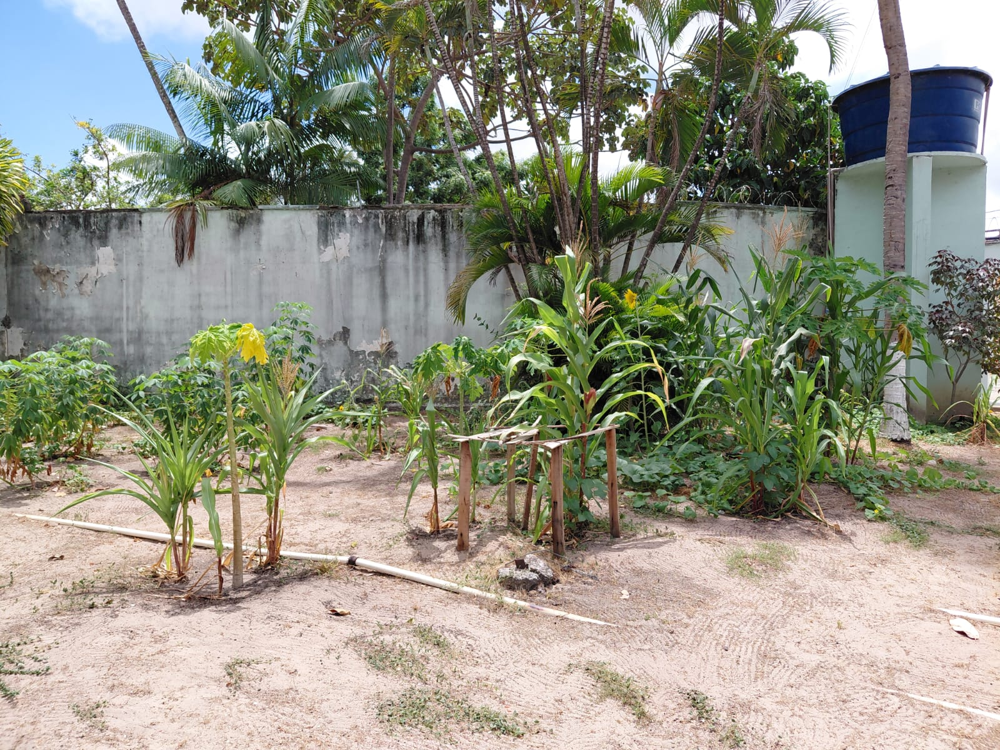
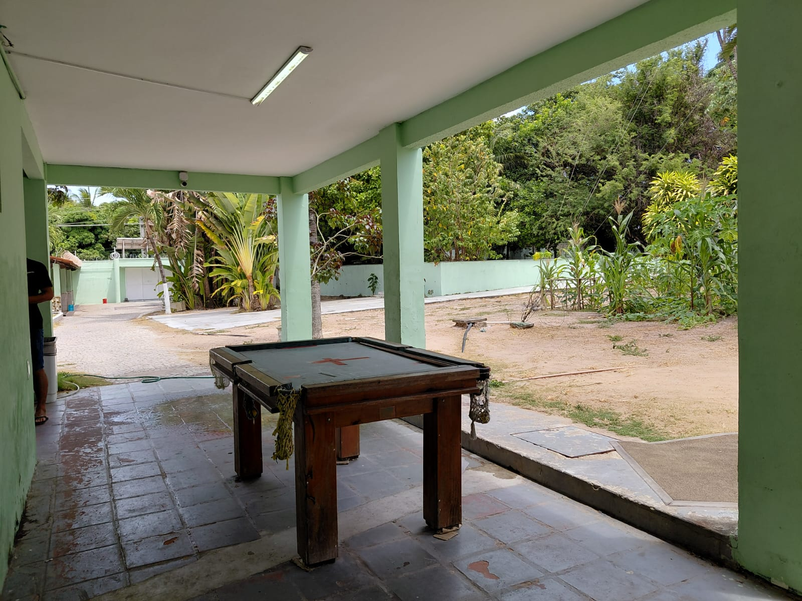

Atividades diárias
Momentos de convivência e atividades fazem parte da programação da casa todos os dias.
Todos os diasTratamento e acolhimento para a dependência química. Um novo caminho também começa com apoio às famílias.

Tratamento e acolhimento para dependência química, com apoio às famílias que buscam um novo caminho.
A casa funciona 24 horas e mantém atividades e oficinas todos os dias. Nosso trabalho reúne pessoas acolhidas, equipe, colaboradores e apoiadores.
Converse com a administração ↗Um olhar pelos espaços que fazem parte do nosso dia a dia. Selecione uma foto para vê-la em tamanho maior.







Nossa história nasce da transformação de um espaço que já era dedicado ao acolhimento.
Nossa casa funcionava anteriormente como uma unidade involuntária. Com a transição para a Comunidade Terapêutica Viver Limpo, passamos a oferecer acolhimento voluntário.
Essa mudança marca uma nova etapa da nossa trajetória e do trabalho que desenvolvemos com nossos residentes.
Converse conosco sobre a casaOs encontros acontecem diariamente, seguindo um cronograma fixo. A programação completa pode ser consultada com a administração.
Momentos de convivência e atividades fazem parte da programação da casa todos os dias.
Todos os diasOficinas promovem participação, aprendizado e troca entre as pessoas da comunidade.
Programação fixaUm espaço compartilhado de acolhimento, cuidado e construção de vínculos.
Casa 24 horasQuer conhecer os horários e a programação?
Fale com a administração para receber o cronograma atualizado.
O trabalho da casa é construído por uma equipe e por colaboradores que se dedicam à rotina e ao acolhimento.
Saiba como colaborar ↗Acolher é um trabalho
feito em conjunto.
Hoje, um dos nossos maiores desafios é conseguir novas doações. Se você puder contribuir, fale com a administração para saber como ajudar.
Saiba como doar por PixAtualmente, recebemos doações por Pix. Você escolhe o valor e faz a contribuição pelo aplicativo do seu banco.
A chave Pix oficial está na página de doações. Confira o recebedor no seu banco antes de confirmar.
Ver chave Pix ↗Estamos em Eusébio, no Ceará. Fale com a administração para combinar uma visita.
Para participar, colaborar, conhecer a casa, consultar o cronograma ou contribuir, fale com a administração.